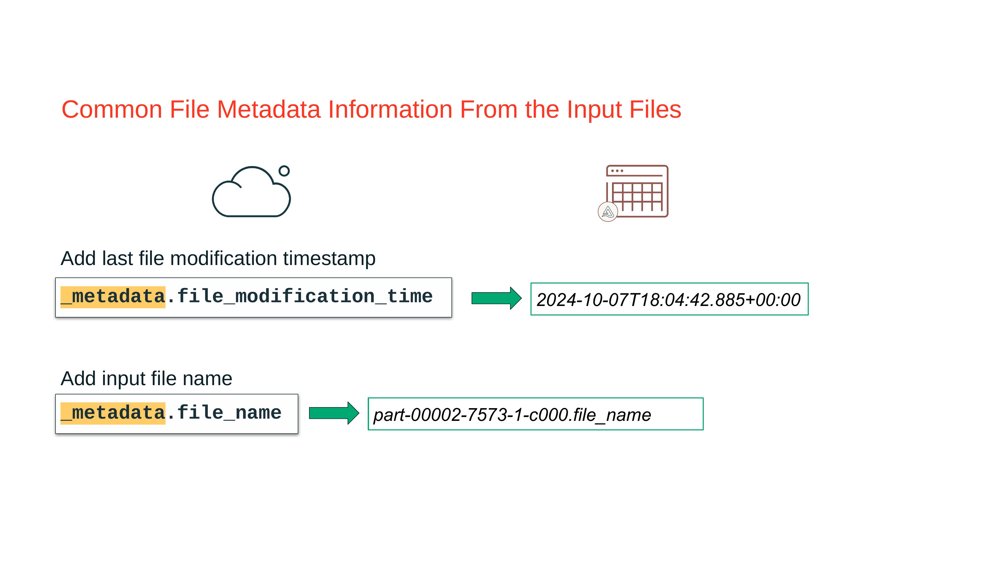
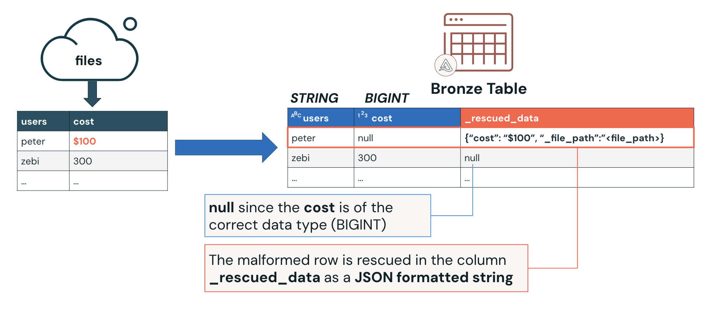

Section 2 · Data Ingestion and Loading · Quelle: Kurs 1, Kapitel 6–9
Beim Laden von Rohdaten in eine Bronze-Tabelle reicht es selten, nur die fachlichen Spalten der Quelle zu übernehmen. Zwei Ergänzungen haben sich in der Praxis als Standard etabliert: Metadaten-Spalten, die dokumentieren, woher und wann eine Zeile stammt, und die Rescued-Data-Spalte, die verhindert, dass unerwartete oder fehlerhafte Werte beim Laden stillschweigend verloren gehen. Beide Mechanismen lassen sich mit denselben Ingestion-Werkzeugen nutzen, die bereits aus der CTAS-/read_files()-Ingestion bekannt sind.
Jede Datei, die über read_files(), spark.read oder Auto Loader eingelesen wird, besitzt eine versteckte Spalte namens _metadata. Sie steht für alle unterstützten Dateiformate zur Verfügung, muss aber explizit in der Leseabfrage ausgewählt werden. Die wichtigsten Felder sind _metadata.file_name (Name der Quelldatei) und _metadata.file_modification_time (letzter Änderungszeitpunkt der Datei). Ergänzt um current_timestamp() für den Ingestion-Zeitpunkt selbst, lässt sich damit für jede Zeile lückenlos nachvollziehen, aus welcher Datei sie stammt und wann sie geladen wurde – wichtig für Auditing, Data Lineage und die Fehlersuche, wenn sich später herausstellt, dass eine bestimmte Quelldatei fehlerhafte Daten enthielt.

_metadata-Spalte: Dateiname und letzter Änderungszeitpunkt.In der Praxis werden diese Felder direkt in die CTAS-Abfrage eingebaut, mit der die Bronze-Tabelle erzeugt wird. Das folgende Beispiel liest historische Nutzerdaten aus Parquet-Dateien, wandelt einen Unix-Zeitstempel in ein lesbares Datum um und ergänzt drei Metadaten-Spalten:
DROP TABLE IF EXISTS historical_users_bronze; CREATE TABLE historical_users_bronze AS SELECT *, cast(from_unixtime(user_first_touch_timestamp / 1000000) AS DATE) AS first_touch_date, _metadata.file_modification_time AS file_modification_time, -- letzte Änderung der Quelldatei _metadata.file_name AS source_file, -- Name der Quelldatei current_timestamp() AS ingestion_time -- Zeitpunkt des Ladevorgangs FROM read_files( "/Volumes/dbacademy_ecommerce/v01/raw/users-historical", format => "parquet" ); -- Beispiel-Auswertung: Zeilenanzahl je Quelldatei SELECT source_file, count(*) AS total FROM historical_users_bronze GROUP BY source_file ORDER BY source_file;
Dieselbe Logik lässt sich äquivalent in PySpark formulieren, etwa wenn die Ingestion Teil eines größeren Python-Skripts ist:
from pyspark.sql.functions import col, from_unixtime, current_timestamp
from pyspark.sql.types import DateType
df = spark.read.format("parquet").load("/Volumes/dbacademy_ecommerce/v01/raw/users-historical")
df_with_metadata = (
df.withColumn("first_touch_date", from_unixtime(col("user_first_touch_timestamp") / 1_000_000).cast(DateType()))
.withColumn("file_modification_time", col("_metadata.file_modification_time"))
.withColumn("source_file", col("_metadata.file_name"))
.withColumn("ingestion_time", current_timestamp())
)
df_with_metadata.write.format("delta").mode("overwrite").saveAsTable("historical_users_bronze_python_metadata")
Nicht jede Zeile einer Quelldatei passt exakt zum erwarteten Schema der Zieltabelle. Ohne Gegenmaßnahme würde ein Wert, der nicht in den erwarteten Datentyp konvertiert werden kann, beim Laden entweder den ganzen Job abbrechen lassen oder – schlimmer – stillschweigend als NULL verschwinden. Genau hier setzt die Rescued-Data-Spalte (_rescued_data) an: read_files(), spark.read und Auto Loader legen sie automatisch an, sobald Werte nicht zum Schema passen, und speichern die nicht einlesbaren Originalwerte als JSON-formatierten String – inklusive Dateipfad der Quelle. Passt eine Zeile vollständig zum Schema, bleibt _rescued_data für diese Zeile NULL.

_rescued_data, statt die Zeile zu verwerfen.Typische Auslöser für gerettete Werte sind fehlende Spalten im Schema, Typ-Konflikte (z. B. Text statt Zahl) oder Groß-/Kleinschreibungs-Konflikte bei Spaltennamen. Besonders häufig tritt das bei CSV-Dateien auf, weil CSV im Gegensatz zu Parquet kein eingebettetes Schema mitbringt. Im folgenden Beispiel enthält eine CSV-Zeile den Wert aaa in einer eigentlich numerischen Spalte; mit einem explizit definierten Schema und aktivierter Rescued-Data-Spalte wird die fehlerhafte Zeile nicht verworfen, sondern gezielt sichtbar gemacht:
SELECT *
FROM read_files(
'/Volumes/dbacademy/ops/labuser/csv_demo_files/malformed_example_1_data.csv',
format => "csv",
sep => "|",
header => true,
schema => '''
order_id INT,
email STRING,
transactions_timestamp BIGINT''',
rescuedDataColumn => "_rescued_data"
);
Fehlt in einer CSV-Datei sogar der Spaltenname selbst (z. B. durch einen fehlerhaften Header), wird die betroffene Spalte unter dem generischen Schlüssel _c0 im JSON der Rescued-Data-Spalte abgelegt. Mit der :-Pfadsyntax lässt sich der Wert anschließend gezielt extrahieren und in eine reguläre Spalte überführen:
SELECT cast(_rescued_data:_c0 AS BIGINT) AS order_id, * FROM read_files( '/Volumes/dbacademy/ops/labuser/csv_demo_files/malformed_example_2_data.csv', format => "csv", sep => "|", header => true );
Im PySpark-Äquivalent wird die Rescued-Data-Spalte über die Option rescuedDataColumn aktiviert:
df = (spark.read
.option("header", True)
.option("sep", "|")
.option("rescuedDataColumn", "_rescued_data")
.csv("/Volumes/dbacademy_ecommerce/v01/raw/sales-csv"))
rescue gesetzt, werden nicht nur fehlende oder falsch typisierte Spalten, sondern auch erkannte Typänderungen zunächst in _rescued_data abgelegt, statt das Zielschema sofort automatisch zu erweitern. In den Modi DROPMALFORMED bzw. FAILFAST führen Typkonflikte durch die aktivierte Rescued-Data-Spalte nicht mehr zum Verwerfen der Zeile bzw. zum Abbruch des Jobs – nur noch tatsächlich korrupte, nicht parsebare Datensätze (z. B. unvollständiges JSON) lösen weiterhin einen Fehler aus.